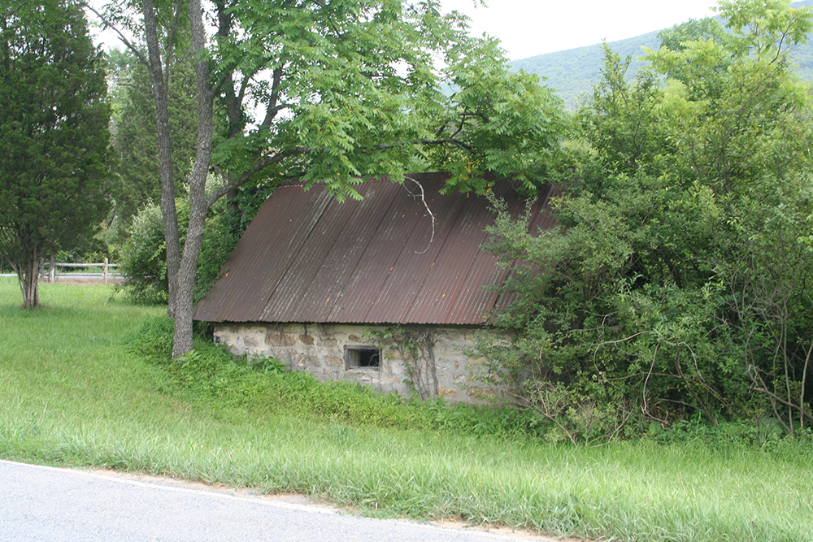

Mary's Childhood
John Bonser and Mary Buskirk married on 1894 March 24 at Phillipsburg, NJ. He was 22 and she was 15. They had 5 children:
Ada May (Bonney), 1895 April 27 - 1976 Nov. 14
Harry Austin, 1896 June 7 - 1970 July 26
Mary Ellen born 1898 July 15
Eva Emalyne born 1900 Oct. 2
Howard Jacob born 1902 April 14
Mary Ellen's first memory from her early childhood was of Eva and she sitting on their father's lap, with Ada and Harry standing behind their father, while he sang songs such as "In the Shade of the Old Apple Tree". The children enjoyed his singing, although her mother said he really couldn't carry a tune. Her next memory was of her father coming home with his foot cut from an ax. As a result of this cut her father died of lock jaw on 1902 August 15.
Their mother, Mary Alice, found work as a chief cook in a hotel. However, she could not afford to keep all the children with her, and so the children mostly lived with relatives, although their mother visited them regularly and kept in touch with them by letter. When the children were given up to other relatives, it was expected that she would not take them back again, so they continued to live with their foster parents after Mary Alice was married for the second time.
Mary Alice's brother Jake wanted to take Howard, and ended up taking both Howard and Harry. This was nice, because the two boys could then grow up together. Eva lived with Mary Alice's sister, Emma Neuhart. Ada lived with a someone unrelated in the community, but soon she moved into the Bethany Orphan's home in Woomolsdorf. Ada was a little hard to manage before she went into the orphanage and she told of once hiding in a flour bin. But she liked it at the orphanage. Of all her sisters and brothers Mary (Ellen) felt closest to her older sister Ada. She wrote uplifting letters and gave Mary advice on many things; for example, "give a fella one finger and he'll take the whole hand". After Ada was married she lived about three miles away from Mary. Her husband ran a drugstore and in later years, Mary often visited her when she returned to Pennsylvania.
Mary (Ellen) first went to live with her Uncle Reuben, who was her mother's oldest brother. The family was good to her. His wife, Mary, had a son by a previous marriage. This son was 8 to 10 years older than Mary. Some friction may have occurred in the family because Uncle Reuben gave Mary special treatment. If there were an orange he thought Mary should get all of it, but his wife thought it should be cut in half for both the children.
After about six months, Mary lived with her mother where she was working as chief cook in a hotel. But then after a few more months, her mother arranged for Mary to live with Sara Correll who was a first cousin of Mary's mother (Note: Sara Correll's mother, Elizabeth (Van Buskirk) Correll was a sister to John Van Buskirk, the father of Mary Alice Bonser) and who lived about one mile away from where Mary Ellen's mother lived. Sara was taking care of her (Sara's) mother and she thought that Mary Ellen would be a companion for her (although it didn't work out that way).
Mary remembered being picked up by them in the horse and buggy and asking if they would buy her a small piano. Later, when she was about ten years old, she actually did buy an old organ for $5.00, using the money she had saved from collecting chestnuts, hickory nuts, and walnuts. However, she only took five organ lessons. The teacher came to the house in a horse and buggy and the lessons cost $.25 each. After these lessons, she was expected to make further progress on her own, which did not occur.
Sara Correll kept house for Silas Kleintop. The Kleintop farm in the Gravel Valley was very large and had a big house. Mary enjoyed the big house with its large hallways and stairway banister to slide down. Silas' nephew, Elmer Marsh, who was 10 years older than Mary, lived there as well. For awhile there seemed to be some jealousy on his part, but later in life he proposed to Mary.
After Mary had been in school for about one year, Sara's mother died. At this point, Silas decided to sell the Kleintop farm and they would move to the Correll place in the Charcoal Valley. Since there was someone renting the place, they lived temporarily at a place near the Mt. Eaton Church until the renters were ready to move out. After this they lived at the Correll place (which was smaller than the Kleintop place) and Mary attended school at a school on that side of Chestnut Hill.
Mary Ellen attended the Mt. Eaton church on Chestnut Hill. This church was used by both the Reformed Church and the Lutherans, and the two ministers preached on alternate Sundays. Mary was confirmed as a Lutheran, largely because her foster father was a very strong Lutheran and was one of the deacons of the church.
Mary's real parents probably spoke mostly English although they knew Pennsylvania Dutch, too. Sarah Correll spoke both English and Pennsylvania Dutch, but Silas Kleintop spoke only Pennsylvania Dutch well. He used to say that "his tongue was too stiff to speak English". When Mary first came into their home, they would discuss things that she wasn't supposed to hear in Pennsylvania Dutch, but since Mary was always very curious, she quickly caught on to what they were saying.
She always enjoyed the 1 mile walk to school, especially on snowy days. She thought the snow drifts in the hills were picturesque. Mary always found school interesting, and she retained a lively curiousity and interest in learning things throughout her life. However, at first she considered herself to be a slow learner. She didn't really get down to studying until about fifth grade when one of her teachers got stuck on the grammar and arithmetic that she was teaching. It then occurred to Mary that if this lady could teach then surely she could become a teacher herself.
So she began to really study hard. Sometimes when she would stay up late her foster mother would worry that she would fall asleep and start a fire by knocking over the coal oil lamp. After ninth grade Mary took a few weeks of "spring school" at an academy. Next she took the teacher's exams and subsequently was sent a teacher's certificate.
For the next 6 years she was a school teacher in one of 3 different one-room school houses. Her first teaching experiences were at the same two schools that she had attended as a child. She recalled that she often felt that she was not a good disciplinarian. After her third year of teaching, a friend encouraged her to move to a school district that was nearer to Philadelphia. It was while teaching there that she met Irwin Bauman who was also a teacher at the high school in the district. She remembers that she was surprised one day when she met him on her way home, standing along the road examining the branches and leaves of some trees. This seemed strange to her, because it was not the shortest way for him to get home. When this happened several more times, she realized that it was not an accident! Eventually they were married.
After Mary Ellen was herself married, Silas Kleintop and Sarah Correll were married by Mary's husband, Irwin Bauman who was a minister. When she was growing up, Mary had called Sarah "Mother", but after their marriage she usually referred to her as "Grandma Kleintop".
On 1909 March 30 Mary Alice (Buskirk) Bonser married Benjamin Nuding. Benjamin had a daughter from a previous marriage named Julia Bessie and the couple also had two children of their own: Benjamin Van and Oscar William. The couple ran a saloon (which also served food). One thing that Mary Alice said was that they would not serve drinks to anyone who was a drunk. Mary Alice lived for a long time and when Mary Ellen Bauman and her family went to Pennsylvania in later years they visited her. Mary Alice died on 1958 Feb. 14.